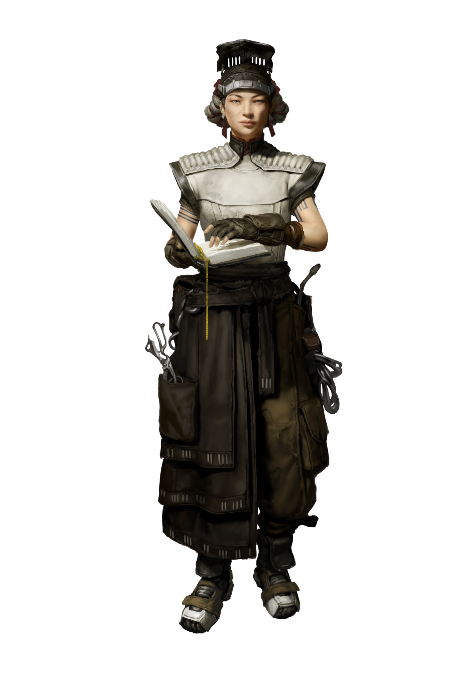

CLAN DOSSIER
Steel Masters
They take pride in their position, and wear it as a badge of honor.
Clans of the Moloch pp. 21–23

CLOUD PEOPLE
Briefing
The Artificer’s workshop was brightly lit, electric lamps shining down on the carefully maintained tools and various equipment in use, but even in his own domain Yama felt out of place. The Executioner was waiting. "I want you to make me something," the Judge said, handing the Steel Master a sheet of paper. Specifications. A glance over it left the Artificer's brow furrowed.
"This… a musket of this caliber would pulverize a horse, let alone a man. What do you need something like that for?"
"Kings," came the gruff reply. "Can you make it or not?"
"I can, but special-purpose weapons must be verified and approved by the-"
The Executioner interrupted, tossing a document on the table. Yama recognised it at once. A special permit for access to Downtown. "Skip the approval. I need it, fast. I'll sign that when you give me my gun, and you'll be able to walk in the city as much as you want. You have one week."
Cloud People
The Steel Masters see the city like nobody else. Confined to their elevated prison cell for generations, ever since they were expropriated from Ferropol, they’ve been granted a unique perspective on the growing urban sprawl beneath them. A commoner passing by below would kill to take their place if they knew of the conditions within the towering structure, where this obscure Clan is given Judicial protection and freely provided every necessity in exchange for steady work. But things look very different from the Crown of the Steel Monolith.
Up there, confinement has become a fact of existence, and isolation weaves itself into the lives of the Steel Masters both spiritually and culturally. At least in appearance, they have embraced the change. Once, they lived amongst the Earth dwellers, meddling in worldly affairs and mixing with the common folk, but the gods saw fit to send the Judges to bring them closer to the heavens. Today they see themselves as Cloud People, accepting their separation from the world below as the way things are meant to be: chosen to dedicate themselves to their craft, manipulating the elements to create masterworks of smithing. They take pride in their position, and wear it as a badge of honor – it’s everything they have left. Only when silence befalls the Monolith at night, and the ringing of the forges fades into the background, do they stop to wonder about what life might be like beyond these walls, and acknowledge their quiet yearning to set foot in the dust of the world below.
Schism
In the Monolith, quarreling was not an option. If you didn’t get along with those you were forced to share a gilded cage with you’d wither away, no matter how ornate or comfortable your confinement was. That was true, until the great schism erupted between the families of Ogota and Gotokai. The two sides have become so intensely opposed that their figureheads, Danislai and Heza, can each now barely stand the other’s presence. The effects ripple down through the Clan’s twin bloodlines; former friends now pass each other in uncomfortable silence, sleeping quarters are divided into sections, and work assignments have become increasingly segregated.
Cabin Fever
The Judges failed to fully consider the mental effects the nature of their imprisonment would inflict on the Steel Masters when they herded them onto the Steel Monolith and locked the doors, especially once the Assam line withered out. The burden weighs heavily on the mind and soul, but some members of the Clan aren’t even sure that escape would solve it. Even if they were able to flee their prison, would they be able to make it in the wide and open realms beyond their enclosure after so long in captivity?
Parole
The Judges are loathe to let their personal blacksmiths have even the slightest hint of freedom. The Steel Masters are only permitted to leave the confines of the Monolith and venture into Downtown with special permits stating the reason for their excursion and the Judge who approved it. Unless given a specified exception, they are restricted to the civic districts, and must report back to a Roper at the Steel Monolith every evening before curfew. If any of them are caught without one, they will be captured and returned to their towering prison, and if they try to escape the city completely they’ll be relentlessly hunted down.
THE CLAN
Hierarchy & Ranks
Select any rank to read its prerequisites, effect, and equipment.
THE CLAN